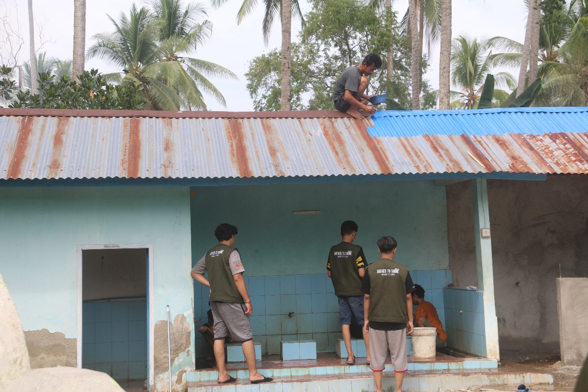

Jumat, 01 November 2024

Sinjai - Mahasiswa Kuliah Kerja Nyata (KKN) Universitas Negeri Makassar melaksanakan kegiatan kerja bakti membersihkan masjid di Dusun Batu Lohe, Desa Sukamaju, Kabupaten Sinjai. Kegiatan ini merupakan bagian dari upaya mahasiswa untuk membantu menjaga kebersihan fasilitas ibadah di lingkungan setempat.
Selama kerja bakti, para mahasiswa bekerja sama melakukan berbagai tugas seperti membersihkan lantai, mengecat atap yang sudah berkarat, dan merapikan area sekitar masjid. Salah satu mahasiswa bahkan terlihat memanjat atap untuk melakukan perbaikan dan pengecatan agar masjid terlihat lebih rapi dan nyaman digunakan oleh warga sekitar.
Kegiatan ini tidak hanya bertujuan untuk meningkatkan kebersihan masjid, tetapi juga mempererat hubungan antara mahasiswa KKN dengan masyarakat setempat. Inisiatif ini diharapkan dapat menjadi contoh semangat gotong royong dan kepedulian terhadap lingkungan sekitar, khususnya dalam menjaga kebersihan dan kenyamanan tempat ibadah.